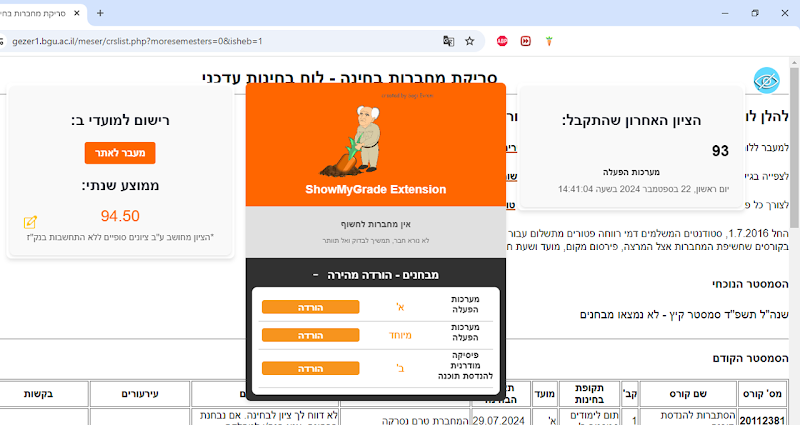

// TOOL_04
ShowMyGrade
// Browser tool for BGU students · DOM parsing · Live at BGU
Loading...

// Overview
A browser-based utility that automatically extracts, parses, and visualizes exam score data from the BGU student portal — a page that provides no native visualization or filtering tools of its own.
Used by real BGU students. The tool runs entirely client-side with no server, parsing live DOM content and rendering dynamic grade breakdowns, averages, and trend charts on demand.
// Key Features
- Live DOM traversal to extract structured grade data from the student portal
- Dynamic chart rendering showing score distributions and averages
- Zero backend — fully client-side, runs privately in the browser
- Clean injected UI that overlays on the existing portal without disruption
- Handles edge cases: missing grades, unusual formats, multiple semesters
// Challenges & Solutions
CHALLENGE
The portal's DOM structure is inconsistent — different course types render different HTML layouts
SOLUTION
Built a resilient multi-strategy parser that attempts several selector paths and falls back gracefully
CHALLENGE
Injecting a clean UI into an existing page without clashing with portal styles
SOLUTION
Used a Shadow DOM container so all injected styles are scoped and isolated from the host page
// Role & Team
TEAM SIZE
Solo
MY ROLE
Frontend / Tool Dev
CONTEXT
Personal Project
YEAR
2023
// Status
Completed · In Use